▲怀素家长沙，幼而事佛，经禅之暇，颇好笔翰。然恨未能远覩前人之奇迹，所见甚浅。遂担
(覩dǔ古同“睹”)
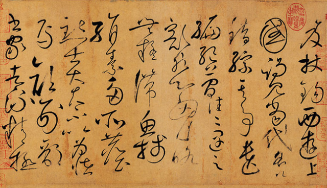▲笈杖锡，西游上国，谒见当代名公。错综其事。遗编绝简，往往遇之。豁然心胸，略无疑滞，鱼笺绢素，多所尘点，士大夫不以为怪焉。颜刑部，书家者流，精极
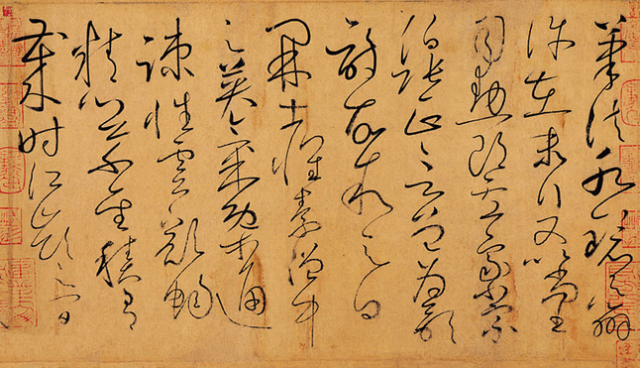▲笔法，水镜之辨，许在末行。又以尚书司勋郎卢象、小宗伯张正言，曾为歌诗，故叙之曰：“开士怀素，僧中之英，气概通疏，性灵豁畅，精心草圣。积有岁时，江岭之间
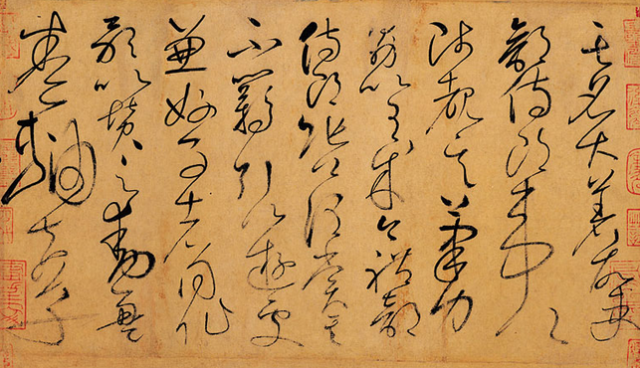▲其名大著。故吏部侍郎韦公陟，覩其笔力。勖以有成。今礼部侍郎张公谓赏其不羁，引以游处。兼好事者，同作歌以赞之，动盈卷轴。夫草
(陟zhì1. 登高：2. 晋升，进用)(勖xù古同勉励：～勉。)
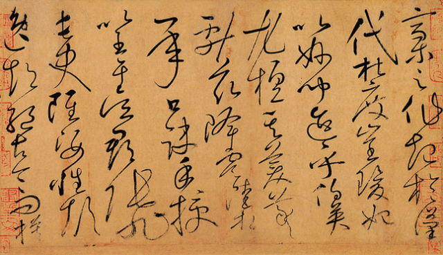▲稿之作，起於汉代，杜度、崔瑗，始以妙闻。迨乎伯英，尤擅其美。羲献兹降，虞陆相承，口诀手授。以至于吴郡张旭长史，虽姿性颠逸，超绝古今，而模
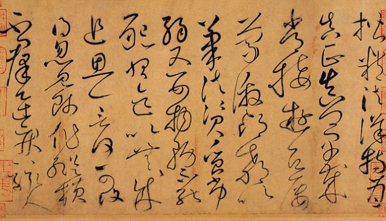▲楷精法详，特为真正。真卿早岁，常接游居，屡蒙激昂，教以；笔法，资质劣弱，又婴物务，不能恳习，迄以无成。追思一言，何可复得。忽见师作，纵横不群，迅疾骇人。
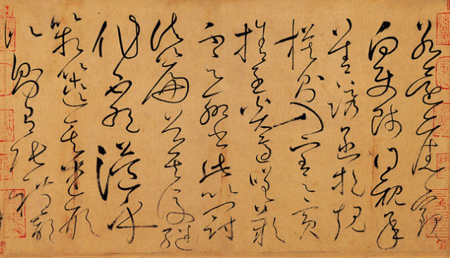▲若还旧观，向使师得亲承善诱，函挹规模，则入室之宾，舍子奚适。嗟叹不足，聊书此，以冠诸篇首。”其後继作不绝，溢乎箱箧。其述形似，则有张礼部
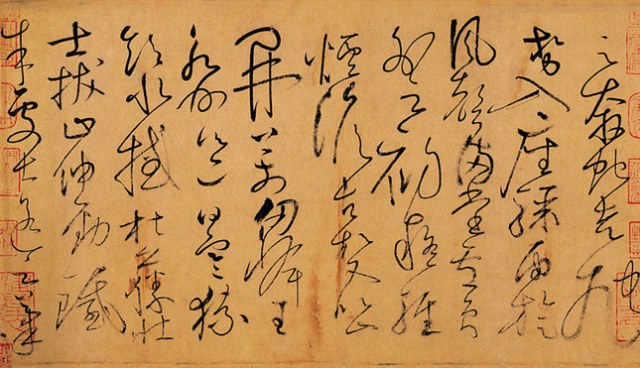▲云：“奔蛇走虺势入座，骤雨旋风声满堂。”卢员外云：“初疑轻烟澹古松，又似山开万仞峰。”王永州邕曰：“寒猿饮水撼枯藤，壮士拔山伸劲铁。”朱处士遥云：“笔
(虺huǐ古书上说的一种毒蛇。[虺虺]〈古〉形容打雷的声音。)(澹dàn 1. 恬静、安然的样子2. 水波纡缓的样子。)
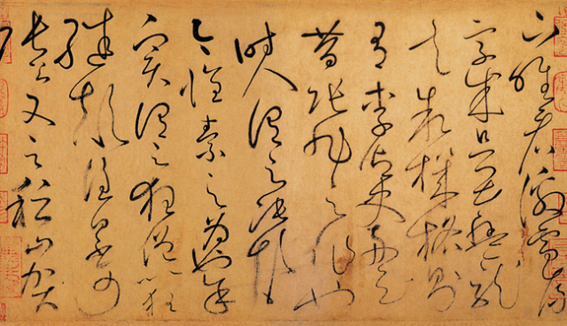▲下唯看激电流，字成只畏盘龙走。”叙机格，则有李御史舟云：“昔张旭之作也，时人谓之张颠，今怀素之为也，余实谓之狂僧。以狂继颠，谁曰不可。”张公又云：“稽山贺
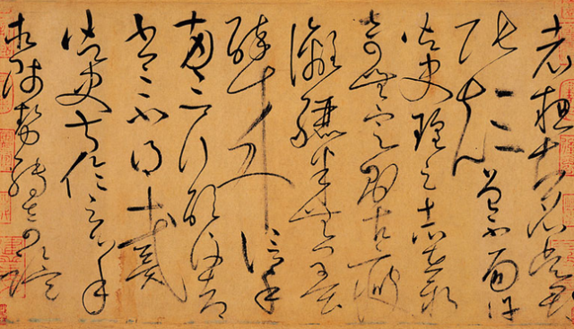▲老总知名，吴郡张颠曾不面。”许御史瑝云：“志在新奇无定则，古瘦漓骊半无墨，醉来信手两三行，醒後却书书不得。”戴御史叔伦云：“心手相师势转奇，诡
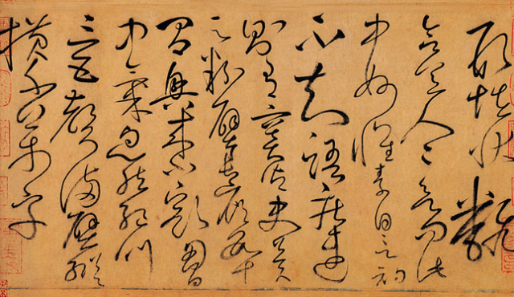▲形怪状翻合宜。人人欲问此中妙，怀素自言初不知。”语疾速，则有窦御史冀云：“粉壁长廊数十间，兴来小豁胸中气。忽然绝叫三五声，满壁纵横千万字。”
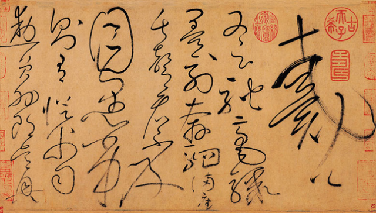▲戴公又云：“驰毫骤墨列奔驷，满座失声看下及。”目愚劣，则有从父司勋员外郎吴兴
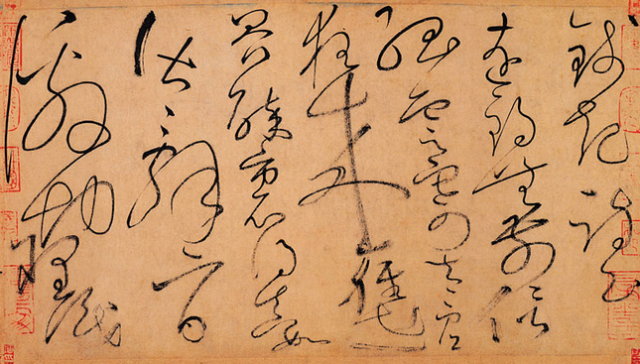▲钱起诗云：“远锡无前侣，孤西寄太虚。狂来轻世界，醉里得真如。”皆辞旨激切，理识
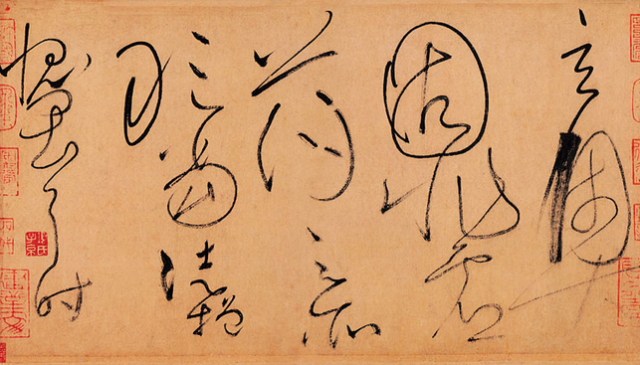▲玄奥，固非虚荡之所敢当，徒增愧畏耳。时
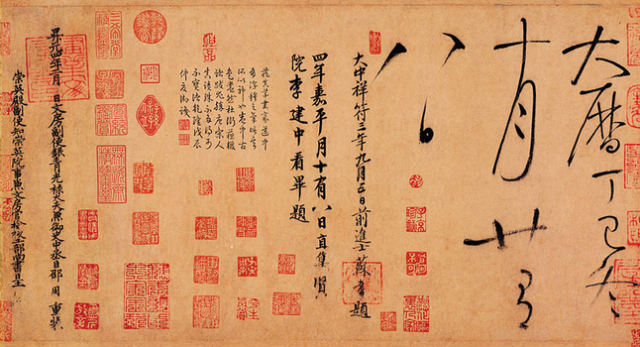▲大历丁已冬十月廿有八日。
首六行早损，为宋苏舜钦补书。帖前有明李东阳篆书引首“藏真自序”四字，后有南唐升元四年(公元940年)邵周、王囗囗重装题记。钤有“建业文房之印”、“佩六相印之裔”、“四代相印”、“许国后裔”、“武乡之印”、“赵氏藏书”、“秋壑图书”、“项元汴印”、“安岐之印”、“乾隆”、“宣统鉴赏”等鉴藏印。内容为自述写草书的经历和经验，和当时士大夫对他书法的品评，即当时的著名人物如颜真卿、戴叙伦等对他的草书的赞颂。《自叙帖》是怀素流传下来篇幅最长的作品，也是他晚年草书的代表作。明文徵明题：“藏真书如散僧入圣，狂怪处无一点不合轨范。”明代安岐谓此帖：“墨气纸色精彩动人，其中纵横变化发于毫端，奥妙绝伦有不可形容之势。”
怀素家长沙。幼而事佛。经禅之睱颇好笔翰。然恨未能远睹前人之奇迹。所见甚浅。遂担笈杖锡。西游上国。谒见当代名公。错综其事。遗编绝简。往往遇之。豁然心胸。略无疑滞。鱼牋（即笺）绢素多所尘点。士大夫不以为怪焉。颜刑部书家者流。精极笔法。水镜之辩。许在末行。又以尚书司勋郎卢象。小宗伯张正言曾为歌诗。帮叙之曰。开士怀素。僧中之英。气概通疏。性灵豁畅。精心草圣。积有岁时。江岭之间。其名大著。帮吏部侍郎韦公陟睹其笔力。勗（勖）以有成。今礼部侍郎张公谓。赏其不羁。引以游处。兼好事者同作歌以赞之。动盈卷轴。夫草稿之作。起于汉代。杜度。崔瑗。始以妙闻。迨乎伯英。尤擅其美。羲。献兹降。虞。陆相承。口诀手授。以至于吴郡张旭长史。虽姿性颠逸。超绝古今。而模（疑为衍字）楷精法详。特为真正。真卿早岁常接游居。屡蒙激昂。教以笔法。资质劣弱。又婴物务。不能恳习。迄以无成。追思一言。何可复得。忽见师作。纵横不群。迅疾骇人。若还旧观。向使师得亲承善诱。函挹规模。则入室之宾。舍子奚适。嗟叹不足。聊书此以冠诸篇首。其后继作不绝。溢乎箱箧。其述形以。则有张礼部云。奔蛇走虺势入座。骤雨旋风声满堂。卢员外云。初疑轻烟淡古松。又似山开万仞峰。王永州邕曰。寒猿饮水撼枯藤。壮士拔山伸劲铁。朱处士遥云。笔下唯激电流。字成只畏盘龙走。
叙机格。则有李御史舟云。昔张旭之作也。时人谓之张颠。今怀素之为也。余实谓之狂僧以狂继颠。谁曰不可。张公又云。稽山贺老粗知名。吴郡张颠曾不易。许御史瑶云。志在新奇无定则。古瘦漓骊半无墨。醉来信手两三行。醒后却书书不得。戴御史叔伦云。心手相师势转奇。诡形怪状翻合宜。人人欲问此中妙。怀素自言初不知。语疾速。则有窦御史冀云。粉壁长廊数十间。兴来小豁胸中气。忽然绝叫三五声。满壁纵横千万字。戴公又云。驰毫骤墨剧奔驷。满座失声看不及。目愚劣。则有从父司勋员外郎吴兴起钱起诗云。远锡无前侣。孤云寄太虚。狂来轻世界。醉里得真如。皆矢旨激节。理识玄奥。固非虚荡之所敢当。徒增愧畏耳。时大历丁巳冬十月二有八日。
陟zhì，1. 登高：～山。2. 晋升，进用：黜～（指官吏的进退升降）。“～罚臧否，不宜异同”。 勖xù，古同勉励：～勉。 瑗yuàn，大孔的璧。 衍yǎn，1. 延长，开展：～绎。～生。推～。展～。敷～。～生物。2. 多余的（指文字）：～文（书籍中因缮写、刻板、排版错误而多出来的字句）。3. 低而平坦之地：～沃（土地平坦肥美。亦作“沃衍”）。 挹yì，1. 舀，把液体盛出来：～取。～彼注兹。～注（喻从有余的地方取出来，以补不足）。2. 拉。3. 古同“抑”，抑制，谦退。4. 古同“揖”，作揖。 箧qiè，箱子一类的东西：藤～。行（xíng ）～。书～。～笥（收藏东西的竹器）。 虺huǐ，古书上说的一种毒蛇。[虺虺]〈古〉形容打雷的声音。怀素家住长沙，幼年就笃信佛教，念经参禅之馀暇，颇好书法。然而遗憾未能亲眼目覩古人奇妙的书迹，所见甚浅。于是担负书箱拄着锡杖，西去游览京师。进见当代名公，综合各种见闻之事，散佚的典籍，卓绝的书简，皆能时时见到，以致开阔心胸，略无粘滞。鱼子牋和白绢，多有墨迹污点，士大夫不以为奇恠了。颜刑部乃是书家之辈，笔法精练，明察辨识，在我的墨迹文后题词称许。又因尚书司勋郎卢象、小宗伯张正言曾为歌诗，因此记述他们的话道: “菩萨怀素，僧侣中的英杰，气概爽朗洒脱，性灵宽畅；精心追求草圣，积累了岁月；从长江到五岭之间，他的名声大着。过去吏部侍郎韦公陟看到我的书迹笔力勉励我有所成就；现今礼部侍郎张公谓说，他赏识我才行高远，不可拘限，导引以游憩；加上爱好书法的同伴作歌以赞之，不觉盈满卷轴。 这草稿书体的写作，起于汉代。杜度、崔瑗，开始以美妙闻名；到了伯英，尤其独揽它的美好。羲、献父子以下，虞世南、陆柬之相继承，口诀亲手相传授。 直到吴郡张旭长史。他虽纵情任性、颠狂放逸，超绝古今，而书迹楷模周详最为纯正。 真卿早年常交往游览居留、屡蒙振奋激励，教以笔法。我因禀性不佳，又羁绊事务，未能认真学习，因此终至无成。 回想过去一言，怎可再得！忽见到尊师的书作，纵横不凡，笔势迅疾骇人，若恢复原来的印象观感。假使师法得以亲近接受善诱，快速挹取典范，则入室之宾客，除你之外，何人适合！感叹不足，聊写此冠之于篇首。” 这以后继续作歌诗赞词的，不断的充塞着大小箱箧。 其中述形似的，就有张礼部说：“行笔有如虺蛇奔走势就座，旋风骤雨声响满屋堂。”卢员外说：“起初疑似轻烟动摇古松，随后又像山开现出万仞峰。”王永州邕说：“那笔画像是寒猿饮水摇动的枯籐，像是壮士拔山伸出的劲铁。”朱处士遥道：“笔下唯看到激电流逝，字写成只吓得蟠龙走动。”
述天机风格的，就有李御史舟说：“过去张旭作书，当时的人称他‘张颠’；今日怀素作书，我实在要称他‘狂僧’。用狂来继承颠，有谁说不可！”张公又说：“稽山贺老〈即贺知章〉只是略知名，吴郡张颠曾北面称臣。”许御史瑶说：“志趣在新奇无一定准则，古瘦的字体似水势流尽一半无墨。醉来信手书写两三行，醒后再书写却不能获得。”戴御史叔伦说：“手以心为师，笔势转新奇，诡形恠状反而合宜。人人欲问此中的奥妙，怀素自己也说全不知。” 说快速的，就有窦御史冀说：“白壁长廊数十间，兴致来了稍稍发泄胸中气。然后大叫三五声，满壁纵横千万字。”戴公又说：“挥毫行墨有若列入的奔马，满座的人失声说眼睛跟不上笔。” 称愚蠢拙劣的，就有叔父司勋员外郎吴兴钱起的诗云：“远飞的鹤，没有前行的伴侣。单独漂浮的云片托付给太虚。发起狂来看轻世界，酒醉里得到真知。”这些都是话语含着激励，见识玄虚奥妙，固然不是漂浮不实之辈之所敢当，只增加我的惭愧畏惧罢了。时大历丁巳冬十月廿八日。
怀素（737～799）中国唐代书法家。俗姓钱，字藏真，湖南长沙人（一说零陵（今湖南省永州市零陵区）人）。生于唐玄宗开元二十五年(737)，立于德宗贞元十五年(799)。因他三家为僧，书史上称他“零陵僧”或”释长沙”。
怀素是中国历史上杰出的书法家，他的草书称为“狂草”，用笔圆劲有力，使转如环，奔放流畅，一气呵成，和张旭齐名。后世有“张颠素狂”或“颠张醉素”之称。可以说是古典的浪漫主义艺术，对后世影响极为深远。他也能做诗，与李白、杜甫、苏涣等诗人都有交往。好饮酒，每当饮酒兴起，不分墙壁、衣物、器皿，任意挥写，时人谓之“醉僧”。他的草书，出于张芝、张旭。唐吕总《读书评》中说：“怀素草书，援毫掣电，随手万变，宋朱长文《续书断》列怀素书为妙品。评论说：“如壮士拔剑，神彩动人。”在长安怀素声誉青云直上，歌颂他草书的诗篇有37篇之多。他的草书有《自叙帖》、《苦笋帖》、《食鱼帖》、《圣母帖》、《论书帖》、《大草千文》、《小草千文》《四十二章经》、《千字文》、《藏真帖》、《七帖》、《北亭草笔》等等。其中《食鱼帖》极为瘦削，骨力强健，谨严沉着。而《自叙帖》其书由于与书《食鱼帖》时心情不同，风韵荡漾。真是各尽其妙。米芾《海岳书评》：“怀素如壮士拨剑，神采动人，而回旋进退，莫不中节。”唐代诗人多有赞颂，如李白有《草书歌行》，曼冀有《怀素上人草书歌》。
《自叙帖》 曾经南唐内府、宋苏舜钦、邵叶、吕辩、明徐谦斋、吴宽、文徵明、项元汴、清徐玉峰、安岐、清内府等收藏。原迹现藏台湾故宫博物院。据曾行公题，旧有米元章、薛道祖及刘巨济诸名家题识，今佚。宋米芾《宝章待访录》、黄伯思《东观馀论》、清安岐《墨缘汇观》等著录。上海延光室、北京故宫博物院、文物出版社有影印本。
行书：东晋书法家王羲之的《兰亭序》，前人以“龙跳天门，虎卧凤阁”形容其字雄强俊秀，赞誉为“天下第一行书”。唐颜真卿所书《祭侄稿》，写得劲挺奔放，古人评之为“天下第二行书”。而苏轼的《黄州寒食帖》则被称为“天下第三行书”。
楷书：四体，欧阳询——欧体，《九成宫醴泉铭》；
柳公权——柳体，玄秘塔》、《神策军碑》、《金刚经》；
颜真卿——颜体，《多宝塔》、《东方画赞碑》、《麻姑仙坛记》、《郭家庙碑》，《颜勤礼碑》；
赵孟頫--赵体，《三门记》，《赤壁赋》。
隶书：<<曹全碑>> <<张迁碑>>，名人著作比较杂论 名人有郑谷口、伊秉绶，金农、邓石如，吴昌硕 等
草书：唐朝张旭《千文断碑》、《古诗四道》，怀素僧《自叙帖》
{kind=link}
{kind=link}
{kind=link}
{kind=link}
{kind=link}
{kind=link}
{kind=link}
{kind=link}
{kind=link}
{kind=link}
{kind=link}